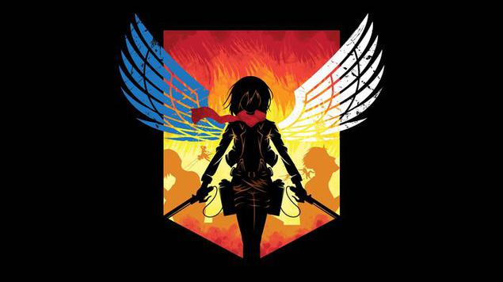
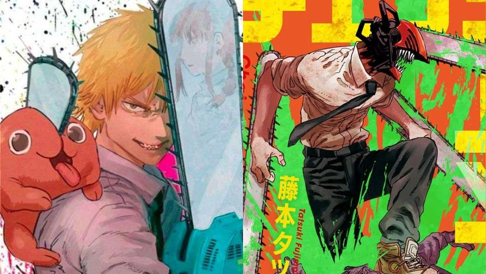

Explorando de animes
Shingeki no Kiojin
La historia se desarrolla en un mundo ficticio en el que la humanidad está al borde de la extinción a causa de unas criaturas humanoides llamadas «titanes», lo que obliga a los sobrevivientes a refugiarse en tres enormes murallas que impiden el acceso a dichos monstruos
Jujutsu Kaisen (JJK)

"Jujutsu Kaisen" es un manga escrito e ilustrado por Gege Akutami. La historia sigue a Yuji Itadori, un estudiante de secundaria con habilidades atléticas excepcionales, quien se encuentra envuelto en un mundo de maldiciones después de tratar de salvar a sus amigos de un objeto maldito. Ahora, Yuji se une a una organización secreta de hechiceros para combatir y exorcizar maldiciones. El manga ha ganado una gran popularidad por su emocionante trama, personajes carismáticos y batallas épicas.
Chainsaw Man
"Chainsaw Man" es un manga escrito e ilustrado por Tatsuki Fujimoto. La historia sigue a Denji, un joven que trabaja como cazador de demonios para pagar la deuda de su difunto padre. Para ello, Denji se une a un perro demoníaco llamado Pochita, que puede transformarse en una motosierra. El manga es conocido por su estilo oscuro, humor negro y giros inesperados en la trama, convirtiéndolo en uno de los favoritos entre los fans del género.